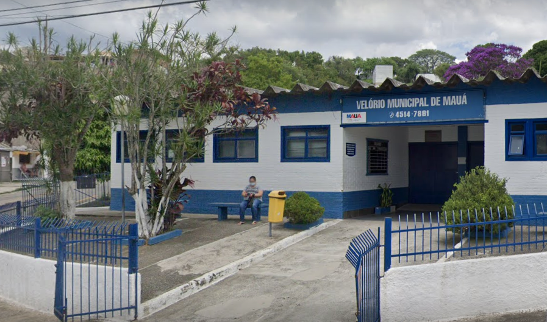
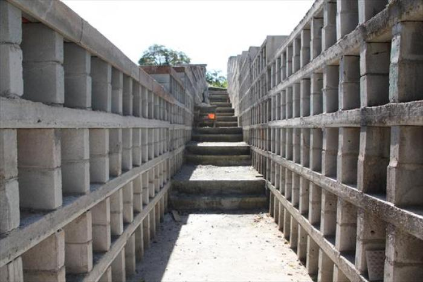
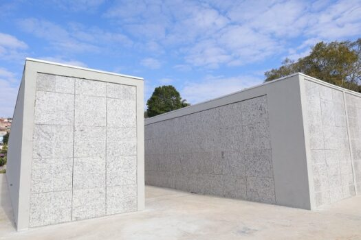

Institucional
O Cemitério Municipal Santa Lídia é um dos principais espaços públicos destinados aos serviços funerários do município de Mauá. Sua função vai além do sepultamento, atuando também na organização documental, controle de registros e apoio às famílias em momentos delicados. A administração do cemitério busca garantir um atendimento eficiente, respeitoso e alinhado às normas legais vigentes. Por meio de processos organizados e controle das informações, é possível assegurar a rastreabilidade dos procedimentos, a correta gestão dos espaços e a preservação dos registros históricos da população atendida. O compromisso institucional é oferecer um serviço público de qualidade, promovendo transparência, responsabilidade e respeito à comunidade mauaense.
Missão, Visão e Valores
Missão
Prestar serviços funerários e de sepultamento com eficiência, organização e respeito, garantindo atendimento humanizado à população e o correto gerenciamento das informações e registros administrativos.
Visão
Ser referência em gestão e logística mortuária no município, oferecendo processos organizados, atendimento de qualidade e utilização adequada dos recursos públicos.
Valores
Respeito, responsabilidade, transparência, ética, organização, compromisso com a população e cumprimento das normas legais são os princípios que orientam nossas atividades.
Compromisso com a Comunidade
Gestão e organização
O controle dos registros e documentos garante maior segurança das informações, permitindo acompanhamento adequado de cada atendimento realizado.
Atendimento humanizado
O atendimento é conduzido com respeito e sensibilidade, oferecendo suporte às famílias durante todas as etapas do processo funerário.
Controle operacional
O monitoramento das movimentações, horários e procedimentos permite maior eficiência logística e melhor gestão dos recursos disponíveis.
Estrutura e atendimento


